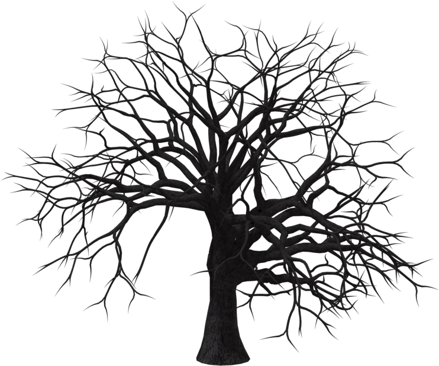

Brás Cubas
“Aqui jaz quem viveu sem grandes feitos e morreu com tempo para contá-los.”

“Aqui jaz quem viveu sem grandes feitos e morreu com tempo para contá-los.”

Ao verme que primeiro roeu as frias carnes do meu cadáver, dedico essas memórias póstumas